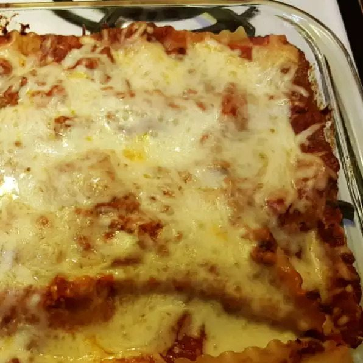

simple meat lasagna, photo by user Brenda, recipie by ccb1122 from allrecipes
Description
I'd die for the taste of a good lasagna, yet lasagna is one of those dishes that it's really hard to get right. So if you're like me and you've just started learning how to cook, this simple recipie is right up your alley.
This lasagna with ground beef and whole wheat noodles is an easy, yet hearty family-pleasing dish.
Ingredients
12 whole wheat lasagna noodles
1 pound lean ground beef
2 cloves garlic, chopped
1 teaspoon dried oregano, or to taste
½ teaspoon garlic powder
salt and ground black pepper to taste
1 (16 ounce) package cottage cheese
½ cup shredded Parmesan cheese
2 eggs
4½ cups tomato-basil pasta sauce
2 cups shredded mozzarella chees
Steps
Preheat the oven to 350 degrees F (175 degrees C).
Bring a large pot of lightly salted water to a boil. Add lasagna noodles and cook for 10 minutes or until al dente; drain.
Meanwhile, place ground beef, garlic, oregano, garlic powder, salt, and black pepper in a large skillet over medium heat; cook and stir until beef is crumbly and evenly browned, about 10 minutes.
Mix cottage cheese, Parmesan cheese, and eggs together in a large bowl until thoroughly combined.
Lay 4 noodles side by side on the bottom of a 9x13-inch baking pan; top with a layer of prepared tomato-basil sauce, a layer of ground beef mixture, and a layer of cottage cheese mixture. Repeat layers twice more, ending with a layer of sauce; sprinkle mozzarella cheese on top. Cover the dish with aluminum foil.
Bake in the preheated oven until the lasagna is bubbling and the cheese has melted, about 30 minutes. Remove foil and bake until cheese has begun to brown, about 10 more minutes. Allow to stand at least 10 minutes before serving.